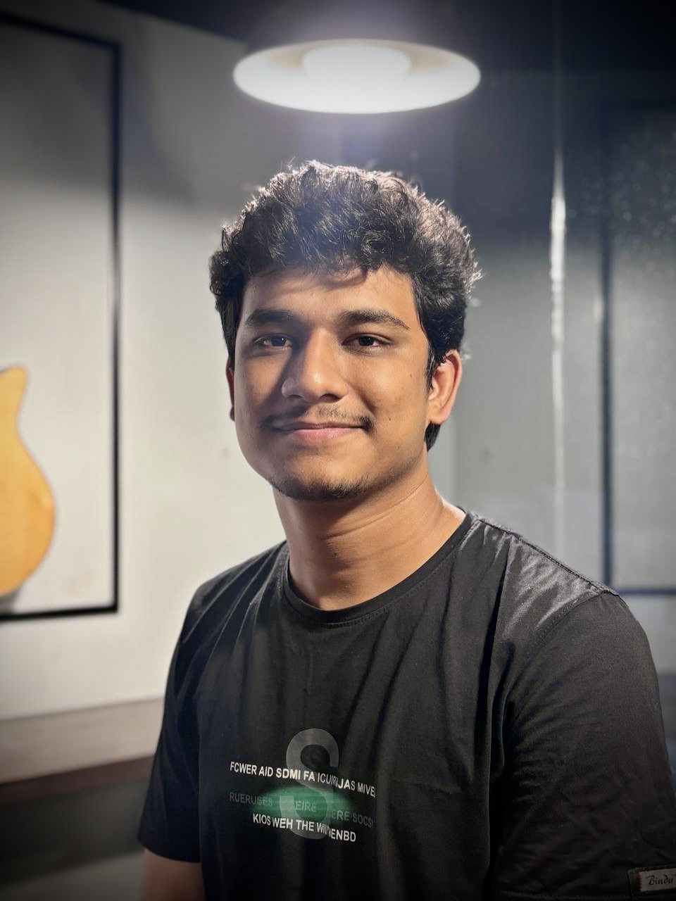
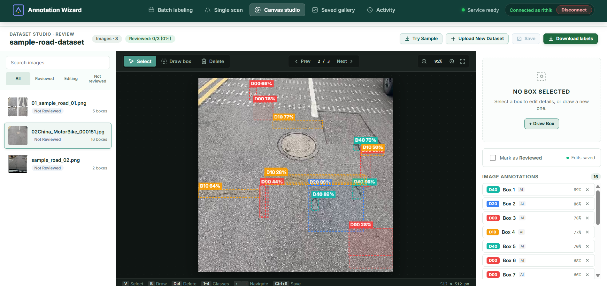
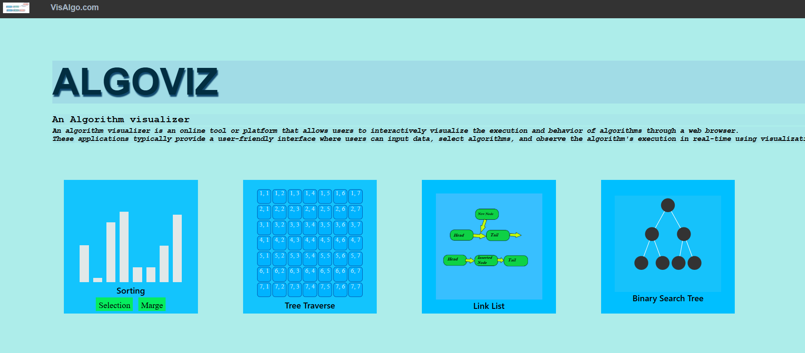
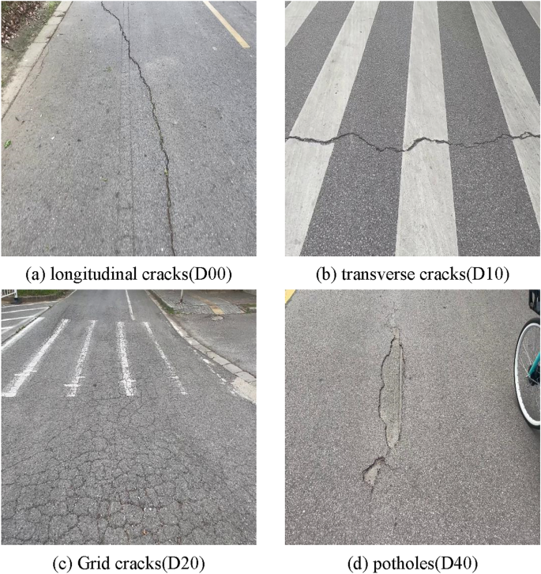

–
Rajshahi University of Engineering & Technology
B.Sc. in Computer Science & Engineering
CSE graduate · RUET · Dhaka, Bangladesh
Software Developer · Backend & Computer Vision
I build useful web applications and REST APIs with Python, FastAPI, JavaScript, and SQL. I also enjoy the hard problems behind algorithms and computer vision.

A little about me
I’m a Computer Science and Engineering graduate from Rajshahi University of Engineering & Technology. I build backend applications and APIs, explore computer vision, and enjoy competitive programming. I care about clear code, thoughtful data models, and building things people can use.
Academic background
–
B.Sc. in Computer Science & Engineering
–
HSC, Science
–
Secondary School Certificate
What I work with
Things I’ve built

Automated road-damage dataset labeling, built to take teams from image archive to editable annotations.

An interactive web project that makes classic algorithms and data structures easier to explore visually.
A full-stack library application with dedicated admin and student workflows.
Undergraduate thesis

Computer Vision YOLOv8
Designed and ran 8+ experiments to evaluate geometric, color, blur/noise, and occlusion/mixing augmentation strategies across four road-damage classes. Compared class-level and overall detection performance using precision, recall, and mAP50, and authored the thesis documentation.
Beyond the keyboard
Rank 73Ruet Potato Coders
Rank 73RUET BRUTEFORCE
Participant RUET CHUNINS
Rank 6 CODESPARK 2022 team
Rank 6 CODESMASH 2021 individual
Across Codeforces, LeetCode, CSES, and LightOJ
Created problems, statements, and test cases for the ICPC-format RUET CodeSmash 2022 fresher contest.
Get in touch
I’d be glad to hear about software engineering opportunities and interesting projects.
Say hello